Справочник по MongoDB · модуль 1 · подключение и первые данные
Глава 1.0а
Windows 10:
MongoDB 7.0 вместо 8.0
Сайт MongoDB по умолчанию предлагает последнюю версию сервера и Compass, а они на Windows 10 уже не поддерживаются: сервер 8.0 рассчитан на Windows 11, и на компьютерах колледжа он не ставится или не запускается. В этой главе — как полностью убрать то, что успело установиться, командами в PowerShell, а затем скачать с mongodb.com сервер 7.0 — ту самую версию, на которой сняты все выводы книги, — и подходящий к нему Compass.
- Категория
- Окружение и установка
- Уровень
- Начальный
- Для кого
- Только Windows 10. На Windows 11, macOS и Linux глава не нужна
- Сколько времени
- Около 20 минут, большая часть — скачивание
§1Почему 8.0 не подходит
У каждой версии MongoDB есть список систем, на которых её проверяли и поддерживают. Для Windows он такой — по документации установки на mongodb.com:
| Сервер | Windows 11 | Windows 10 | Что в книге |
|---|---|---|---|
| 8.0 и новее | да | нет | на этой версии выводы не сверялись |
| 7.0 | да | ставится и работает | все выводы книги — MongoDB 7.0 |
| 6.0 | да | да | запасной вариант, см. §13 |
С Compass то же самое: начиная с версии 1.38 он требует Windows 10 или новее, а выпуски 1.47 и позже вышли уже после окончания поддержки Windows 10 и рассчитаны на новые системы. Узнать свою версию Windows можно командой winver в строке «Выполнить» (Win+R) или в PowerShell:
(Get-CimInstance Win32_OperatingSystem).Caption
Microsoft Windows 10 Pro
Если там Windows 11, эта глава не нужна: ставьте версии с сайта как есть. Если Windows 10 — идём дальше.
§2Что поставим вместо
Сервер 7.0 не открывает файлы, записанные сервером 8.0, поэтому папка данных удаляется вместе с сервером. Для курса это не потеря: учебные базы загружаются заново из репозитория практик за минуту — глава 1.0, §6. Если вы успели сделать что-то своё, сначала выгрузите это в Compass: Export Data у нужной коллекции.
§3Шаг 1. PowerShell от имени администратора
Удалять программы и службу может только администратор. Нажмите Win+X и выберите Windows PowerShell (администратор) — на некоторых компьютерах пункт называется Терминал (администратор). На вопрос «Разрешить этому приложению вносить изменения?» ответьте Да. В заголовке окна должно быть слово «Администратор».
Все команды главы вставляются в это окно целиком, блоком: скопируйте блок, щёлкните в окне правой кнопкой мыши — PowerShell вставит текст — и нажмите Enter. Команды главы проверены на Windows: ниже показано ровно то, что они выводят.
§4Шаг 2. Посмотреть, что установлено
Windows хранит список установленных программ в реестре — там же, откуда его берёт окно «Приложения и возможности». Спросим у него всё, в названии чего есть MongoDB:
$keys = 'HKLM:\Software\Microsoft\Windows\CurrentVersion\Uninstall\*',
'HKLM:\Software\WOW6432Node\Microsoft\Windows\CurrentVersion\Uninstall\*',
'HKCU:\Software\Microsoft\Windows\CurrentVersion\Uninstall\*'
Get-ItemProperty $keys -ErrorAction SilentlyContinue |
Where-Object DisplayName -like '*MongoDB*' |
Select-Object DisplayName, DisplayVersion
DisplayName DisplayVersion ----------- -------------- MongoDB 8.0.32 2008R2Plus SSL (64 bit) 8.0.32 MongoDB Shell 2.10.0 MongoDB Compass 1.50.0
У нас три программы: сервер 8.0, Compass и оболочка mongosh. Первые две удалим, mongosh оставим — она работает с любой версией сервера. Если в вашем списке Compass нет, ничего страшного: следующие шаги просто его пропустят.
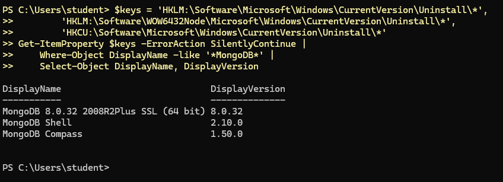
§5Шаг 3. Закрыть Compass, остановить сервер
Работающую программу удалить нельзя: файлы заняты. Закроем Compass и остановим службу сервера. Ключ -ErrorAction SilentlyContinue означает «если такой программы или службы нет — молча продолжить».
Stop-Process -Name 'MongoDB Compass', MongoDBCompass -Force -ErrorAction SilentlyContinue Stop-Service -Name MongoDB -Force -ErrorAction SilentlyContinue Get-Service -Name MongoDB -ErrorAction SilentlyContinue
Status Name DisplayName ------ ---- ----------- Stopped MongoDB MongoDB Server (MongoDB)
Последняя строка показывает службу после остановки: Stopped. Если вывода нет вовсе, службы не было — сервер ставился без неё.
§6Шаг 4. Удалить сервер и Compass
Удаляем программы их же деинсталляторами — так же, как кнопка «Удалить» в «Приложениях и возможностях», только без окон. Сервер установлен пакетом MSI, его удаляет msiexec /x. Compass, скачанный как .exe, устанавливается в папку пользователя и удаляется своей программой Update.exe --uninstall. Команда сама разберётся, какой случай перед ней, и не тронет mongosh и Database Tools:
$keys = 'HKLM:\Software\Microsoft\Windows\CurrentVersion\Uninstall\*',
'HKLM:\Software\WOW6432Node\Microsoft\Windows\CurrentVersion\Uninstall\*',
'HKCU:\Software\Microsoft\Windows\CurrentVersion\Uninstall\*'
$apps = Get-ItemProperty $keys -ErrorAction SilentlyContinue | Where-Object {
$_.DisplayName -like 'MongoDB*' -and
$_.DisplayName -notlike '*Tools*' -and $_.DisplayName -notlike '*Shell*' }
foreach ($app in $apps) {
Write-Host "Удаляю: $($app.DisplayName)"
if ($app.UninstallString -like 'MsiExec*') {
Start-Process msiexec.exe -ArgumentList "/x $($app.PSChildName) /qn /norestart" -Wait
} else {
$exe = ($app.UninstallString -split '"')[1]
Start-Process $exe -ArgumentList '--uninstall', '-s' -Wait
}
}
Удаляю: MongoDB 8.0.32 2008R2Plus SSL (64 bit) Удаляю: MongoDB Compass
Каждое удаление занимает от нескольких секунд до минуты; пока оно идёт, новое приглашение PS> не появится. Дождитесь его.
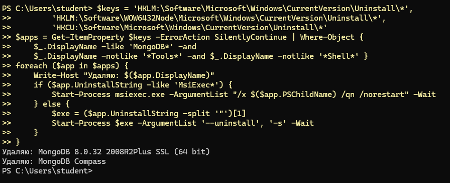
§7Шаг 5. Убрать папки, службу и Path
Деинсталлятор удаляет файлы, которые сам поставил, но оставляет созданное позже: папку данных сервера, настройки и сохранённые подключения Compass. Удалим их, службу — если она осталась — и папку сервера из переменной Path:
$paths = "$env:ProgramFiles\MongoDB\Server",
"$env:ProgramFiles\MongoDB Compass",
"$env:LOCALAPPDATA\MongoDBCompass",
"$env:APPDATA\MongoDB Compass",
'C:\data\db'
foreach ($p in $paths) {
if (Test-Path $p) { Remove-Item $p -Recurse -Force; Write-Host "Удалено: $p" }
}
if (Get-Service -Name MongoDB -ErrorAction SilentlyContinue) { sc.exe delete MongoDB }
foreach ($scope in 'Machine', 'User') {
$old = [Environment]::GetEnvironmentVariable('Path', $scope)
if (-not $old) { continue }
$new = ($old -split ';' | Where-Object { $_ -and $_ -notlike '*MongoDB\Server*' }) -join ';'
if ($new -ne $old) {
[Environment]::SetEnvironmentVariable('Path', $new, $scope)
Write-Host "Path ($scope): убраны папки MongoDB\Server"
}
}
Удалено: C:\Program Files\MongoDB\Server Удалено: C:\Users\student\AppData\Local\MongoDBCompass Удалено: C:\Users\student\AppData\Roaming\MongoDB Compass Удалено: C:\data\db
Строки «Удалено» — только о тех папках, которые нашлись; у вас их список может быть другим. Переменная Path меняется лишь для новых окон — это важно в §10.
§8Шаг 6. Проверить, что ничего не осталось
$keys = 'HKLM:\Software\Microsoft\Windows\CurrentVersion\Uninstall\*',
'HKLM:\Software\WOW6432Node\Microsoft\Windows\CurrentVersion\Uninstall\*',
'HKCU:\Software\Microsoft\Windows\CurrentVersion\Uninstall\*'
$left = Get-ItemProperty $keys -ErrorAction SilentlyContinue | Where-Object {
$_.DisplayName -like 'MongoDB*' -and
$_.DisplayName -notlike '*Tools*' -and $_.DisplayName -notlike '*Shell*' }
"Программ MongoDB и Compass: " + @($left).Count
"Служба MongoDB есть: " + [bool](Get-Service -Name MongoDB -ErrorAction SilentlyContinue)
"Папка MongoDB\Server есть: " + (Test-Path "$env:ProgramFiles\MongoDB\Server")
"Настройки Compass есть: " + (Test-Path "$env:APPDATA\MongoDB Compass")
Программ MongoDB и Compass: 0 Служба MongoDB есть: False Папка MongoDB\Server есть: False Настройки Compass есть: False
Должно быть ровно так: ноль программ и три False. Если какая-то строка отличается, выполните шаги 3–5 ещё раз — чаще всего мешал незакрытый Compass. Удаление завершено; перезагружать компьютер не нужно.
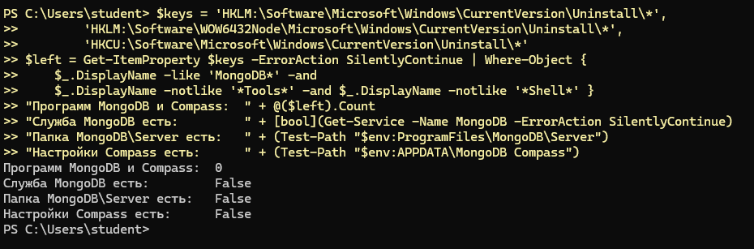
§9Шаг 7. Скачать сервер 7.0
Откройте страницу mongodb.com/try/download/community и прокрутите до карточки Community Server. Нажмите Select Package — под карточкой появятся три списка.
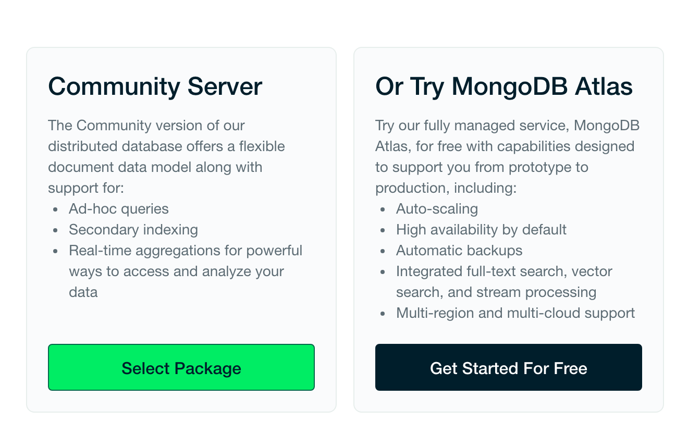
В списке Version по умолчанию стоит самая новая версия с пометкой (current). Выберите 7.0.43:
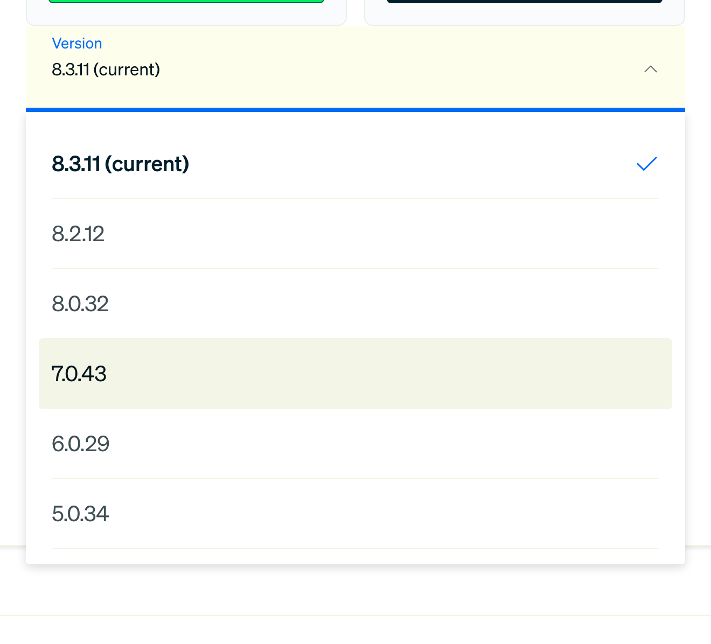
В Platform выберите Windows x64, в Package — msi, и нажмите Download. Файл mongodb-windows-x86_64-7.0.43-signed.msi весит около 600 МБ.
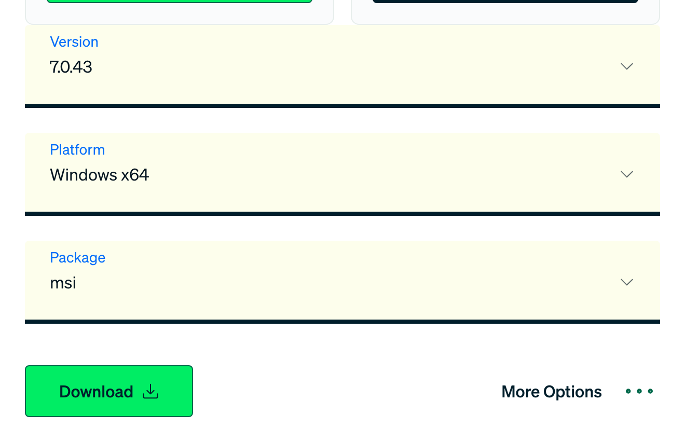
Та же ссылка напрямую: fastdl.mongodb.org/windows/mongodb-windows-x86_64-7.0.43-signed.msi.
§10Шаг 8. Установить сервер
Запустите скачанный файл двойным щелчком и пройдите мастер. На двух экранах нужно действовать не так, как предлагается по умолчанию, — они отмечены.
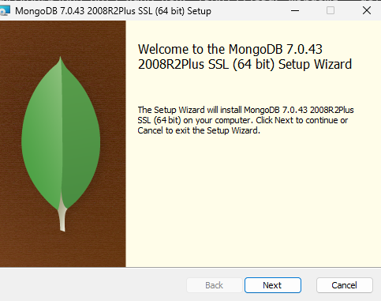
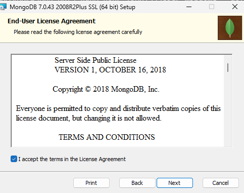
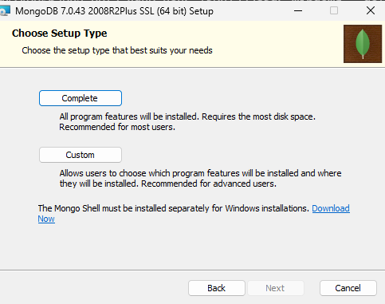
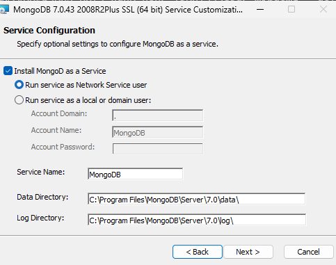
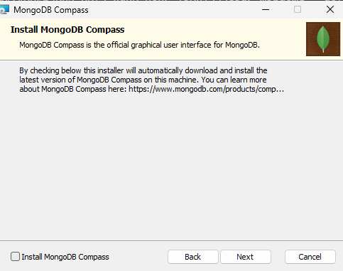
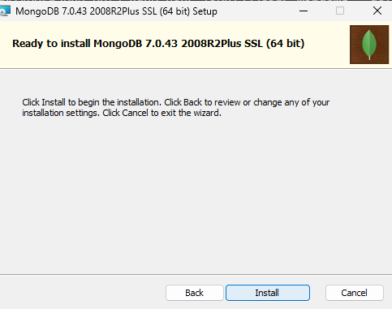
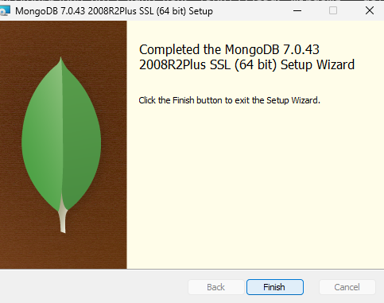
Тот же результат одной командой, без окон, — в PowerShell администратора из папки «Загрузки»:
cd $env:USERPROFILE\Downloads msiexec.exe /i mongodb-windows-x86_64-7.0.43-signed.msi /qb SHOULD_INSTALL_COMPASS=0 ADDLOCAL=ServerService,Client
SHOULD_INSTALL_COMPASS=0 обязателен: иначе установщик сам скачает последнюю версию Compass, ту самую, которая нам не подходит.
§11Шаг 9. Скачать Compass 1.46
На странице mongodb.com/try/download/compass в списке версий есть только последняя. Старые выпуски MongoDB хранит в архиве: под кнопкой Download нажмите More Options → Archived releases.
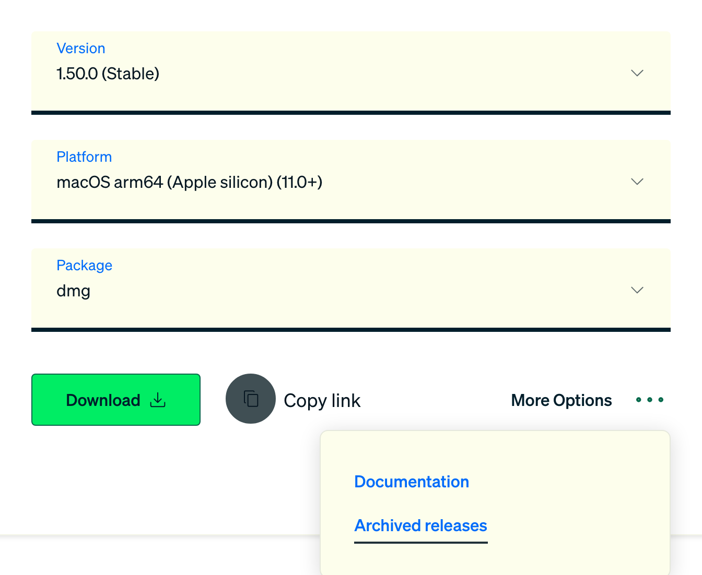
Ссылка ведёт на страницу выпусков Compass на GitHub — это официальный репозиторий MongoDB mongodb-js/compass. Найдите выпуск 1.46.11 (прямая ссылка: github.com/mongodb-js/compass/releases/tag/v1.46.11).
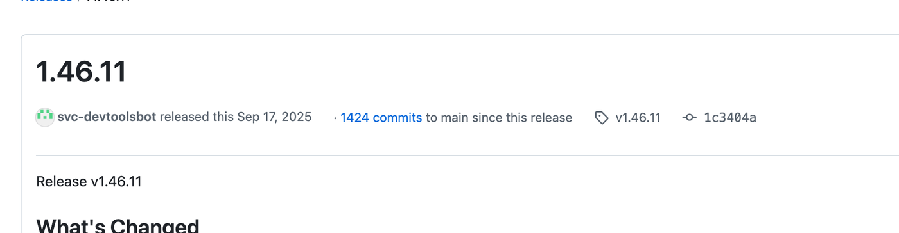
Внизу страницы в разделе Assets скачайте mongodb-compass-1.46.11-win32-x64.msi. Не перепутайте: файлы со словами isolated и readonly в названии — урезанные версии, darwin — для macOS.
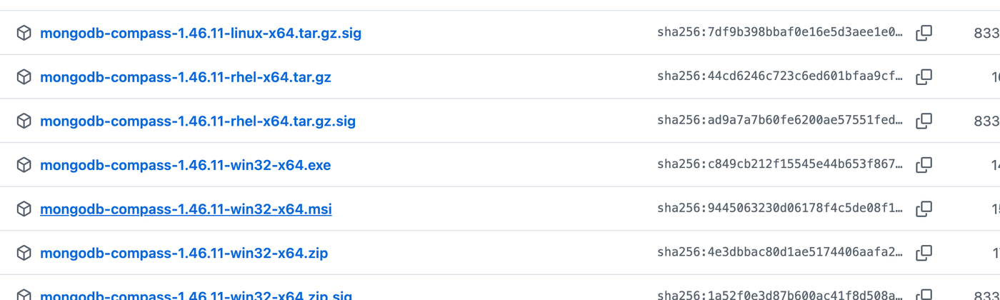
Тот же файл лежит и на сервере MongoDB: downloads.mongodb.com/compass/mongodb-compass-1.46.11-win32-x64.msi.
§12Шаг 10. Установить Compass и подключиться
Запустите скачанный .msi. Мастер короткий: Next, папку оставить как есть, Install, Finish.
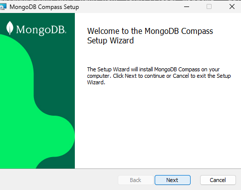
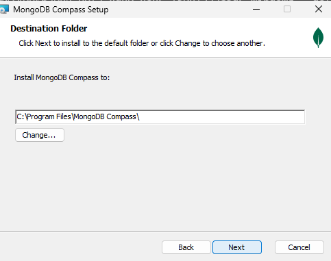
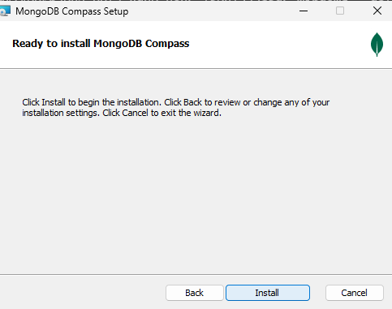
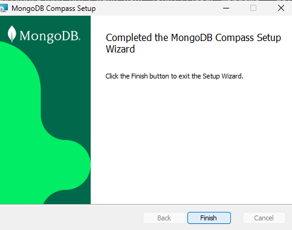
Проверим всё сразу в новом окне PowerShell — в старом переменная Path прежняя:
$keys = 'HKLM:\Software\Microsoft\Windows\CurrentVersion\Uninstall\*',
'HKLM:\Software\WOW6432Node\Microsoft\Windows\CurrentVersion\Uninstall\*',
'HKCU:\Software\Microsoft\Windows\CurrentVersion\Uninstall\*'
Get-ItemProperty $keys -ErrorAction SilentlyContinue |
Where-Object DisplayName -like 'MongoDB*' | Format-Table DisplayName, DisplayVersion
Get-Service -Name MongoDB | Format-Table Status, StartType, Name
& "$env:ProgramFiles\MongoDB\Server\7.0\bin\mongod.exe" --version | Select-Object -First 1
DisplayName DisplayVersion ----------- -------------- MongoDB Compass 1.46.11.0 MongoDB Shell 2.10.0 MongoDB 7.0.43 2008R2Plus SSL (64 bit) 7.0.43 Status StartType Name ------ --------- ---- Running Automatic MongoDB db version v7.0.43
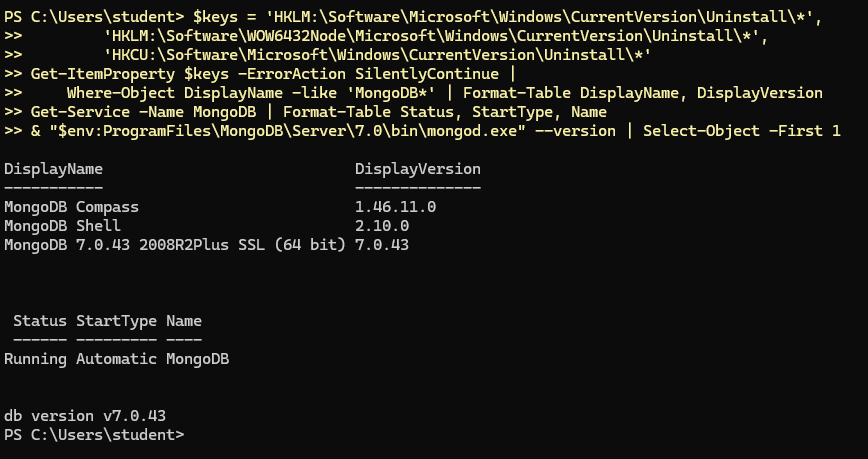
Служба MongoDB в состоянии Running с автозапуском, сервер — версии 7.0.43. Откройте Compass из меню «Пуск», на приветствии нажмите Start, затем Add new connection → Save & Connect: адрес mongodb://localhost:27017 уже подставлен.
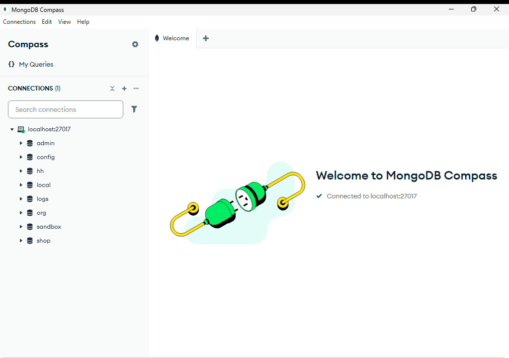
Сервер новый и пустой. Загрузите учебные базы — глава 1.0, §6, — и дальше всё идёт по книге.
Через несколько минут работы Compass может предложить обновиться до последней версии — той, что на Windows 10 не поддерживается. Нажмите Close, а чтобы вопрос не повторялся, в Settings → Privacy снимите галочку Enable Automatic Updates.
§13Частые ошибки
| Что происходит | Что видно | Что делать |
|---|---|---|
| PowerShell открыт без прав администратора | Access is denied, Stop-Service: Cannot open MongoDB service, удаление не происходит | Закрыть окно и открыть заново через Win+X → «(администратор)», §3 |
| Compass не закрыт | После §8 «Настройки Compass есть: True» или ошибка «файл используется другим процессом» | Закрыть Compass в диспетчере задач и повторить шаги 3–5 |
| Осталась папка данных 8.0 | Служба 7.0 не запускается; в журнале C:\Program Files\MongoDB\Server\7.0\log\mongod.log — ошибка о несовместимых файлах данных | Удалить сервер, выполнить §7 и поставить 7.0 заново |
| Установщик 7.0 сам поставил новый Compass | В списке программ Compass 1.50 или новее | В мастере не сняли галочку Install MongoDB Compass. Удалить Compass шагами 4–5 и поставить 1.46.11 |
| Ошибка 1603 или 2503 в установщике | Окно «The installer has encountered an unexpected error» | Установщик запущен без прав администратора: правой кнопкой по файлу → «Запуск от имени администратора» |
| Служба 7.0 не стартует на старом процессоре | Служба сразу останавливается, в журнале нет строки Waiting for connections | Серверу 5.0 и новее нужен процессор с инструкциями AVX. Поставить сервер 6.0 не поможет — тоже нужен AVX; поднять стенд в Docker тоже нельзя. Путь — Codespaces в браузере, глава 1.1а, §10 |
| 7.0 не ставится вовсе | Установщик сообщает о неподдерживаемой системе | Взять сервер 6.0.29 на той же странице (§9, список Version) — он официально поддерживает Windows 10. Compass 1.46.11 работает и с ним |
§14Шпаргалка
Get-ItemProperty $keys |
Where DisplayName -like '*MongoDB*'
msiexec /x {код} /qn # сервер
Update.exe --uninstall -s # Compass .exe
mongodb.com/try/download/community
# Version 7.0.43 · Windows x64 · msi
github.com/mongodb-js/compass/releases
# v1.46.11 · win32-x64.msi
Get-Service MongoDB
mongod.exe --version # v7.0.43
Итог главы
MongoDB 8.0 и свежий Compass рассчитаны на Windows 11, поэтому на Windows 10 ставим сервер 7.0.43 — версию, на которой сняты выводы книги, — и Compass 1.46.11. Перед установкой старое удаляется целиком: программы — их деинсталляторами, затем папки данных и настроек, служба и запись в Path; проверка должна показать ноль программ и три False. Сервер скачивается с mongodb.com выбором версии в списке, Compass — из архива выпусков по ссылке Archived releases. Главное в мастере — снять галочку Install MongoDB Compass. После установки загрузите учебные базы и возвращайтесь к главе 1.0.